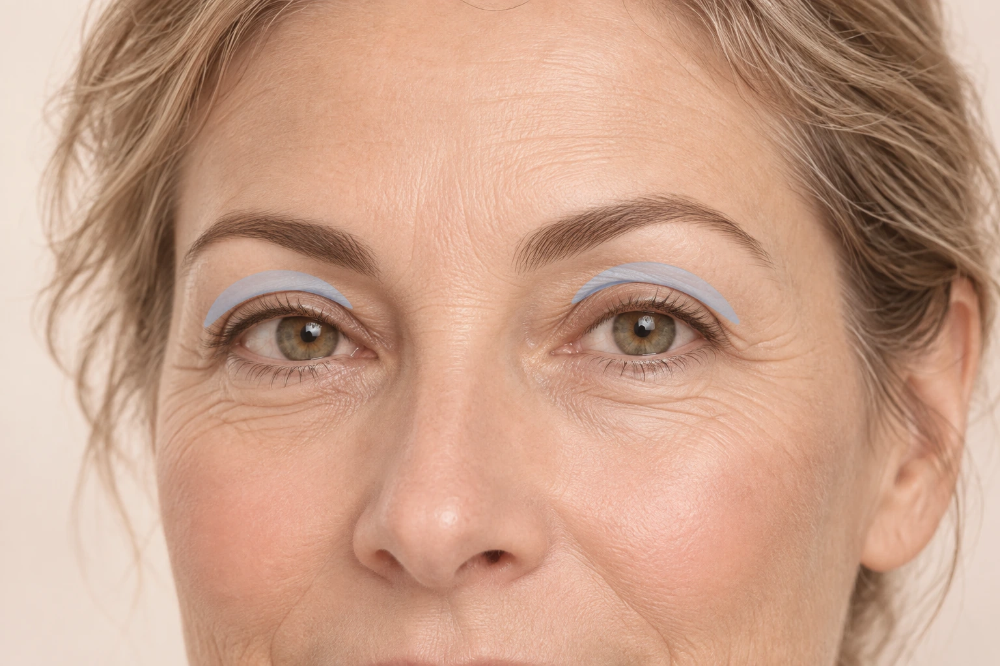

Eine Oberlidkorrektur kann störenden Hautüberschuss an den oberen Augenlidern reduzieren. Wir untersuchen zuvor, ob tatsächlich die Lidhaut, eine abgesunkene Augenbraue oder eine Schwäche des Lidhebemuskels für den Befund verantwortlich ist.

Mögliche Gründe sind ein störender Hautüberschuss, ein Schweregefühl oder eine durch überhängende Lidhaut eingeschränkte Sicht. Bei funktionellen Beschwerden kann zusätzlich eine augenärztliche Untersuchung einschließlich Gesichtsfeldprüfung notwendig sein.
Eine abgesunkene Braue und eine echte Lidhebeschwäche (Ptosis) können ähnlich aussehen, benötigen aber gegebenenfalls ein anderes Vorgehen. Augenstellung, Lidschluss und bereits bestehende Asymmetrien werden in die Planung einbezogen.
Vor dem Eingriff markieren wir den zu korrigierenden Bereich. Über einen Schnitt in der natürlichen Oberlidfalte wird überschüssige Haut sparsam entfernt. Falls der individuelle Befund es erfordert, kann zusätzlich vorgewölbtes Fettgewebe angepasst werden. Wir erhalten ausreichend Gewebe für einen sicheren Lidschluss und schließen die Wunde mit feinen Nähten.
Die Behandlung erfolgt üblicherweise ambulant in örtlicher Betäubung. Umfang, Seite bzw. beidseitiges Vorgehen und ergänzende Maßnahmen werden vorher persönlich besprochen.
Ziel ist ein zum Gesicht passendes Ergebnis unter Erhalt der Lidfunktion. Vollständige Symmetrie, unsichtbare Narben oder ein dauerhaft unverändertes Aussehen lassen sich nicht garantieren. Krähenfüße, Augenringe und Brauenabsenkung werden durch eine reine Oberlidkorrektur nicht zuverlässig beseitigt.
Schwellungen, Blutergüsse, Spannungsgefühl, vorübergehende Taubheit, Tränen oder Trockenheitsgefühl sind möglich. Allgemeine Operationsrisiken sind Nachblutung, Infektion, Wundheilungsstörung, auffällige Narben und Unverträglichkeiten von Medikamenten oder Betäubungsmitteln.
Spezifisch können Asymmetrien, eine veränderte Lidfalte, kleine Narbenzysten, unzureichende oder zu starke Gewebeentfernung und ein unvollständiger Lidschluss entstehen. Dies kann die Augenoberfläche austrocknen und die Hornhaut schädigen. Manche Beschwerden erfordern Augentropfen, weitere augenärztliche Behandlung oder eine Korrekturoperation.
Selten treten anhaltende Lidfunktionsstörungen, Doppelbilder oder andere Sehstörungen auf. Sehr selten kann eine Blutung hinter dem Auge den Sehnerv gefährden und bis zum dauerhaften Sehverlust führen. Individuelle Risiken und notwendige Sofortmaßnahmen besprechen wir vor dem Eingriff.
Örtliche Betäubungsmittel können unter anderem Blutergüsse, vorübergehende oder selten anhaltende Gefühlsstörungen, allergische Reaktionen und bei unbeabsichtigter Gefäßinjektion Kreislauf- oder Herzrhythmusstörungen verursachen. Sedierung und Narkose können Atmung und Kreislauf beeinträchtigen; außerdem sind Übelkeit, Erbrechen, Aspiration sowie Verletzungen durch Atemwegssicherung möglich. Schwere Komplikationen sind selten. Bei geplanter Sedierung oder Narkose erfolgt eine gesonderte individuelle Aufklärung.
Erste Tage: Schwellung und Blutergüsse können zunächst zunehmen. Nach etwa ein bis zwei Wochen: Fäden werden nach Befund entfernt; sichtbare Veränderungen klingen oft deutlich ab. Folgende Wochen bis Monate: Narben und Restschwellungen reifen weiter. Das endgültige Ergebnis wird erst im Verlauf beurteilt.
Planen Sie gesellschaftliche Termine mit Reserve. Sonnenschutz der abgeheilten Narbe und eine Sonnenbrille unterstützen die Schonung; direkte UV-Belastung vermeiden. Kontrolltermine auch bei gutem Verlauf wahrnehmen.
Leichte Beschwerden lassen sich meist mit einem individuell empfohlenen Schmerzmittel behandeln. Nehmen Sie keine zusätzlichen Schmerzmittel oder ASS zur Selbstbehandlung ohne Rücksprache; bereits ärztlich verordnetes ASS oder andere Blutverdünner nicht selbst absetzen.
Zunehmende Rötung, Eiter, Fieber, Wundöffnung oder anhaltende Blutung bitte zeitnah melden. Starke oder rasch zunehmende Schmerzen sind kein gewöhnlicher Heilungsverlauf.
Bei zunehmenden Beschwerden bitte sofort melden: Praxis 06151 786540; außerhalb der Praxissprechzeiten +49 151 10437450. Falls nicht erreichbar: zahnärztlicher Notdienst 01805 60 70 11. Bei lebensbedrohlicher Notlage, Atemnot oder rascher Schwellung von Mundboden, Hals oder Zunge: 112.
Kann das Ergebnis später wieder nachlassen? Ja. Der natürliche Alterungsprozess setzt sich fort. Ob und wann eine weitere Behandlung sinnvoll ist, hängt vom Befund ab.
Standard ist die Lokalanästhesie. Zusätzliche Sedierung oder Narkose wird individuell vereinbart und erfordert eine gesonderte Beurteilung.
| Methode | Beschreibung | Kosten |
|---|---|---|
| Lokalanästhesie Standard | Wach, kein Schmerz – nur Druck. Bei Schmerzwahrnehmung wird sofort nachbetäubt. Nach reiner Lokalanästhesie sind ÖPNV grundsätzlich möglich; bei beeinträchtigtem Sehen ist eine Begleitung erforderlich. | Im individuell vereinbarten Behandlungspaket enthalten. |
| Orale Sedierung (Tavor) Komfort | Tablette ca. 60 Min. vorher. Kein Schlaf, deutliche Stressreduktion. Vitalparameter werden überwacht. Begleitperson notwendig, 24 Std. nicht verkehrsfähig. Abholung aus der Praxis verpflichtend. | ca. 80 € Eigenleistung |
| Dämmerschlaf (i.v.) Komfort | Professionelles Narkoseteam, medikamentös an der Schlaf-Wachgrenze, kooperativ, meist keine Erinnerung. Postop. Aufwachraum mit Vitalüberwachung. Nur dienstags. Nüchtern ab 22 Uhr nichts essen, ab 6 Uhr nichts trinken. Abholung aus der Praxis verpflichtend. | ca. 230 € Eigenleistung |
| Vollnarkose Komfort | Echter Tiefschlaf, Beatmung über die Nase in die Lunge, keine Wahrnehmung des Eingriffs. Postop. Aufwachraum mit Vitalüberwachung. Nur dienstags. Nüchtern wie Dämmerschlaf. Abholung aus der Praxis verpflichtend. | ca. 450 € Eigenleistung |
Ästhetische Oberlidkorrekturen sind individuell vereinbarte Eigenleistungen. Bei medizinischer Indikation muss eine mögliche Kostenübernahme vor der Behandlung mit der Versicherung geklärt werden; eine Zusage besteht nicht automatisch. Sie erhalten vorab eine Kostenvereinbarung.
QR-Code mit dem Smartphone scannen
https://patienteninfo.mkg-im-carree.de/oberlidkorrektur/
Weiterführende Quellen
DGPRÄC: Augenlidstraffung
NHS: Eyelid surgery
Cambridge University Hospitals: Blepharoplasty
Royal Free London: Nachsorge und Augen-Warnzeichen